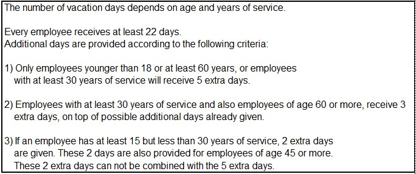

NOTA
Usando clpr
conviene scrivere sempre i numeri interi, es. 10, se al di fuori di {}
(es. negli argomenti dei predicati e dei goal) nella forma 10.0
(altrimenti in qualche caso si può ottenere un errore:
"not_normalized(10)")
ESERCIZIO A
Tratto da: Jacob Feldman: What-If Analyzer for DMN-based Decision Models. Rule ML 2016 Challenge, http://ceur-ws.org/Vol-1620/paper2.pdf
Nella
decisione per valutare se concedere un prestito ad una persona, una
delle condizioni può essere che abbia esito positivo una verifica
su quanto il potenziale cliente guadagna (income validation)
tenendo conto dell'importo da concedere in prestito e di quanto la
persona abbia già da ripagare per altri prestiti (es. prestito per
pagare gli studi universitari, molto diffuso in USA; mutuo, etc; in
questo esercizio non consideriamo la storia precedente del credito
della persona, importante per considerare come tali i famigerati mutui subprime, cioè ad alto rischio di non essere ripagati, che hanno fatto scoppiare la crisi nel 2007-08).
Più in dettaglio, le quantità coinvolte sono:
Loan Amount: importo del prestito
Loan Term : durata (in mesi) del prestito
Monthly Income: introito mensile del potenziale cliente
Monthly Debt:
quanto mensilmente paga il potenziale cliente per ripagare prestiti già
contratti (es. mutuo); supponiamo rimanga invariata durante il LoanTerm
Result: esito della verifica, ok/no
In una prima fase, non consideriamo gli interessi su questo prestito.
Le
prime 4 quantità non sono necessariamente fornite in input, e la quinta
attesa in output, ma supponiamo che (solo) dalle prime 4 dipenda la quinta nel
modo seguente; detti:
Total Income: introito totale previsto del potenziale cliente durante la durata del prestito
Total Debt: debito da ripagare (per altri prestiti contratti in precedenza) durante la durata di questo prestito
Accumulated Debt: quanto si prevede che il potenziale cliente dovrà ripagare nel periodo del prestito: TotalDebt + Loan Amount (non
considerando in questa fase gli interessi su questo prestito, quindi
approssimando con LoanAmount la somma che il potenziale cliente dovrebbe
ripagare in totale per questo prestito)
la verifica ha esito positivo se TotalIncome > AccumulatedDebt (ignoriamo il fatto che il potenziale cliente avrà anche altre spese...), ha esito negativo altrimenti
Definire una relazione incomev che possa essere usata per determinare ad esempio:
- che si ha esito positivo per LoanAmount=30000, LoanTerm=24, MonthlyIncome=2000, MonthlyDebt=500
- quale
condizione deve valere per LoanAmount per avere esito positivo con
LoanTerm=24, MonthlyIncome=2000, MonthlyDebt=500 (risposta: LoanAmount
< 36000)
- una condizione per LoanTerm (da interpretare a cura
dell'utente sui numeri interi) per avere esito positivo con
LoanAmount=40000, MonthlyIncome=2000,MonthlyDebt=500 (T >= 27)
In una seconda fase, si definisca un altro predicato incomeval, utilizzando incomev e la relazione mortgage già disponibile (restiringendosi al caso con saldo finale zero).
Questa definizione deve tenere conto del fatto che la somma TotalRepayment, che
il potenziale cliente deve ripagare per il prestito oggetto di analisi,
dipende dal tasso di interesse e dal numero di rate; non è uguale
all'ammontare del prestito, sarà invece uguale all'importo della rata
per il numero di rate. Ora avremo
Accumulated Debt = TotalDebt + TotalRepayment, mantenendo la condizione TotalIncome > AccumulatedDebt per avere esito positivo di questa analisi.
La definizione di incomev può rimanere uguale, ma se ad es. si è usato un argomento LoanAmount per incomev, ridenominarlo TotalRepayment e aggiungere un commento che indichi che si tratta appunto della cifra totale che il cliente dovrà ripagare per questo prestito.
Per maggior chiarezza, come argomento per incomeval si utilizzi ad es. il nome Principal per la somma da prendere in prestito.
Utilizzare incomeval per determinare:
- che
si ha esito positivo per Principal=30000, LoanTerm=24, Interest=0.01,
MonthlyIncome=2000, MonthlyDebt=500, e qual è l'importo della rata
(1412.2)
- quale
condizione deve valere per Principal per avere esito positivo con
LoanTerm=24, Interest=0.01, MonthlyIncome=2000, MonthlyDebt=500 (Principal
< 31865.080886441767)
- la prima soluzione per LoanTerm per avere esito positivo con Principal=40000, Interest=0.01,
MonthlyIncome=2000, MonthlyDebt=500 (LoanTerm =32.0)
ESERCIZIO B
Tratto da: https://dmcommunity.org/challenge/challenge-jan-2016/
Si
considerino queste regole per determinare il numero di giorni di ferie
a cui ha diritto un dipendente (regole con struttura simile potrebbero
determinare gli sconti sul prezzo di vendita di un oggetto):

intendendo "non combinare" come: si dà priorità alla regola che fornisce 5 giorni.
Definire una relazione che correli giorni di ferie, età e anzianità di servizio.
Utilizzarla non solo per determinare quanti giorni ottengono persone con età e
anzianità date, ma anche per determinare quali sono i numeri di giorni
di ferie effettivamente possibili, e per ciascuno le condizioni su età
e anzianità per ottenerli (senza pretendere che per ogni possibile
numero di giorni si ottenga una sola soluzione con associata una unica
condizione). Sarebbe opportuno considerare un vincolo
generale tra età e anzianità (es. età >= anzianità +14, dove 14 è
l'età minima per essere dipendenti), ma le condizioni su età e
anzianità risulteranno più esplicite se lo si ignora.
Per
rendere più generale la soluzione, dopo una eventuale prima versione
con i soli requisiti di cui sopra, scrivere la relazione in modo che
permetta di risolvere problemi nella cui descrizione in CLP c'è:
- un numero "base" di giorni di ferie;
- un insieme di regole "additive" (nel caso particolare, la seconda) che forniscono giorni da aggiungere, se soddisfatte;
- un
(unico, per semplicità) insieme di regole "mutuamente esclusive" (nel
caso particolare, la prima e la terza) che prevedono di assegnare il
massimo numero di giorni (anche zero) fra quelli che risulterebbero
dall'applicazione di ciascuna regola
Nella descrizione del problema si può quindi ad esempio prevedere:
- un nome per le regole (es. r1, r2, r3)
- dei fatti che permettano di considerle in un modo o nell'altro (es.: rules([r1,r2,r3]), mutexrules([r1,r3]) )
- per descrivere i giorni extra che si ottengono (o otterrebbero) in base a ciascuna regola, delle clausole della forma:
r1(...) :- ...
oppure:
extra(r1,.....) :- ....